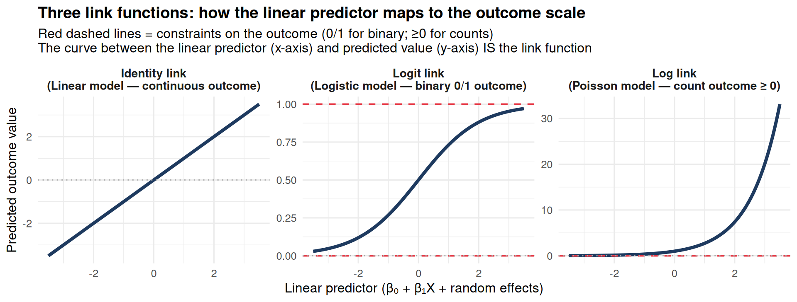

Code
x_seq <- seq(-3.5, 3.5, length.out = 200)
df_links <- bind_rows(
# Identity link (linear model): predicted value = linear predictor (no constraint)
tibble(
linear_predictor = x_seq,
predicted = x_seq,
link = "Identity link\n(Linear model — continuous outcome)",
note = "No constraint: predicted value\ncan be negative or > 1"
),
# Logit link (logistic model): maps log-odds to probability ∈ (0, 1)
tibble(
linear_predictor = x_seq,
predicted = plogis(x_seq),
link = "Logit link\n(Logistic model — binary 0/1 outcome)",
note = "S-curve: predicted stays in (0, 1)\nSlope flattest at extremes"
),
# Log link (Poisson model): maps log-rate to non-negative count
tibble(
linear_predictor = x_seq,
predicted = exp(x_seq),
link = "Log link\n(Poisson model — count outcome \u2265 0)",
note = "Exponential: predicted always positive\nVariance scales with mean"
)
) |>
mutate(link = factor(link, levels = unique(link)))
ggplot(df_links, aes(x = linear_predictor, y = predicted)) +
geom_line(linewidth = 1.4, color = "#1e3a5f") +
geom_hline(data = tibble(link = factor("Logit link\n(Logistic model — binary 0/1 outcome)",
levels = levels(df_links$link)),
y = c(0, 1)),
aes(yintercept = y), color = "#e63946", linetype = "dashed", linewidth = 0.7) +
geom_hline(data = tibble(link = factor("Log link\n(Poisson model — count outcome \u2265 0)",
levels = levels(df_links$link)),
y = 0),
aes(yintercept = y), color = "#e63946", linetype = "dashed", linewidth = 0.7) +
geom_hline(yintercept = 0, linetype = "dotted", color = "#aaa", linewidth = 0.5) +
facet_wrap(~ link, scales = "free_y", ncol = 3) +
labs(
title = "Three link functions: how the linear predictor maps to the outcome scale",
subtitle = "Red dashed lines = constraints on the outcome (0/1 for binary; \u22650 for counts)\nThe curve between the linear predictor (x-axis) and predicted value (y-axis) IS the link function",
x = "Linear predictor (\u03b2\u2080 + \u03b2\u2081X + random effects)",
y = "Predicted outcome value"
) +
theme_minimal(base_size = 12) +
theme(strip.text = element_text(face = "bold", size = 10.5),
plot.title = element_text(face = "bold"))